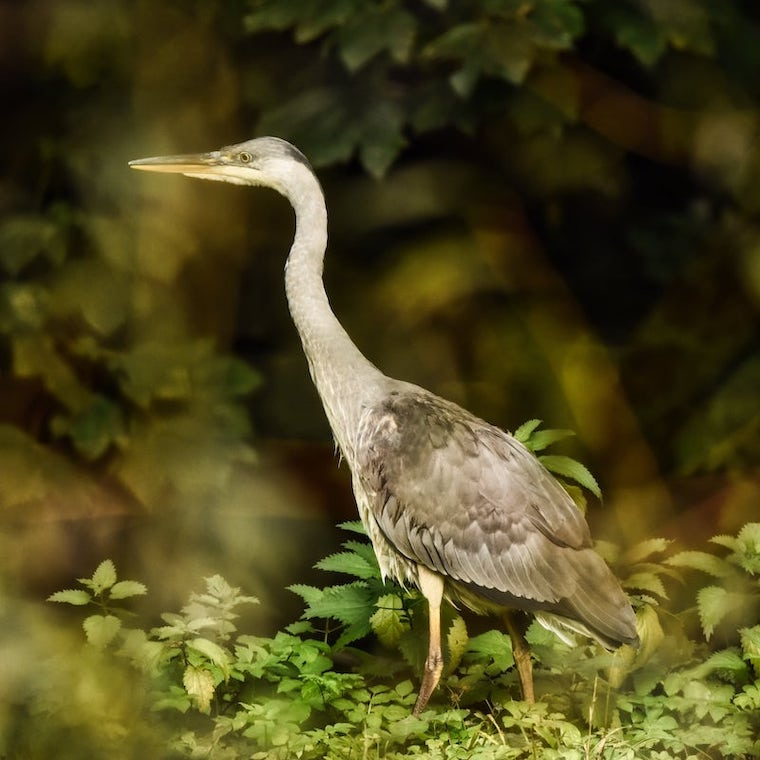
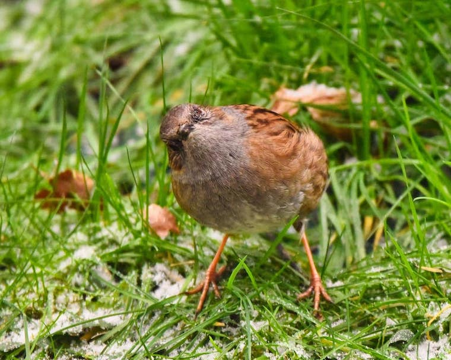
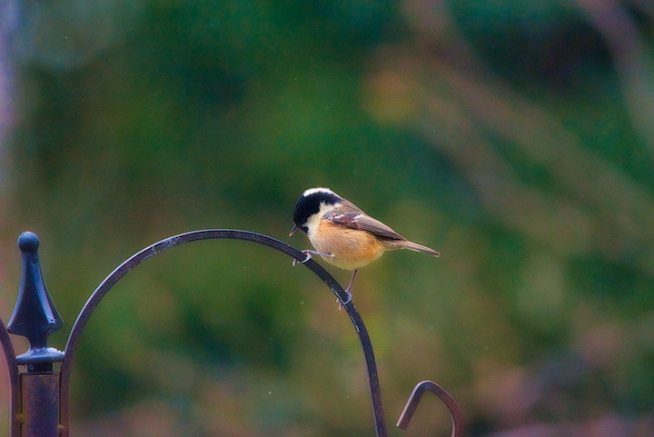
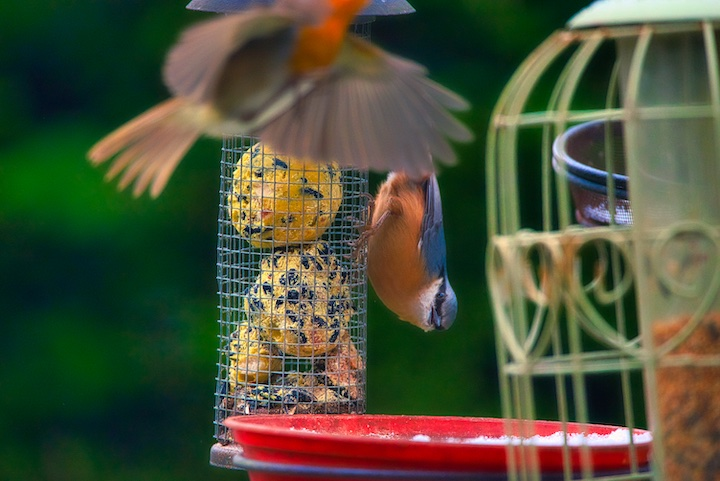

Some Highlights


The only print dimensions we currently sell are either 12x12 inches or 14x11 inches
All cards are of photo print quality designed to maximise resolution

We are working towards using 100% recyclable cards, printers and cartridges
10% from all print sales will be donated to a charity that supports wildlife conservation
If you would like to sell on our site, please don't hesitate to get in touch
If there is anything more that you would like to know about our products and/or services, please do get in touch